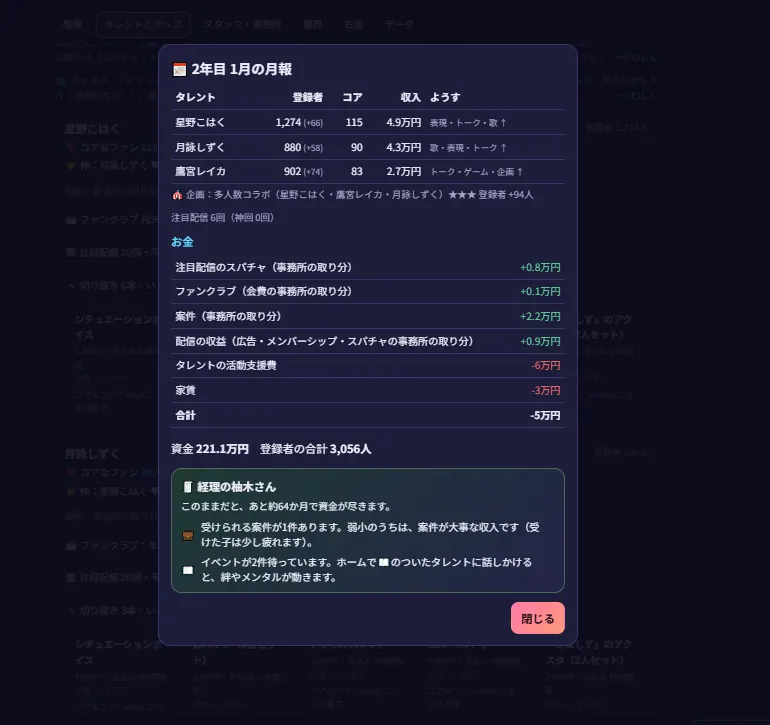

『VTuber事務所シミュレーター』の試作版Proto50を、社長としてプレイしてみました。最初はこはく、しずく、レイカの3人だけ。全員それぞれの家から配信中で、事務所はアパートの一室です。
夢は大きくても、現実の数字は厳しい。3人の活動費と家賃を払うためには、登録者を増やして、まず収益化を達成することが必要です。
星野こはく「社長！ 今日からよろしくね！ こはくたち3人で、いつか大きなステージに立とうね！」
アパートの一室で始まった「ほしぞらプロダクション」。所属は3人、最初の登録者は合計520人。配信もイベントも、たまに失敗しながら、一緒に成長した10か月の記録です。
『VTuber事務所シミュレーター』の試作版Proto50を、社長としてプレイしてみました。最初はこはく、しずく、レイカの3人だけ。全員それぞれの家から配信中で、事務所はアパートの一室です。
夢は大きくても、現実の数字は厳しい。3人の活動費と家賃を払うためには、登録者を増やして、まず収益化を達成することが必要です。

社長は毎月レッスンを組み、配信を見守り、案件を判断します。タレントには歌・トーク・ゲームなどの得意不得意があり、疲労やメンタルの管理も必要。人気だけを追えばいいわけではありません。
5月には3人の多人数コラボが決まりました。3人の事務所ならではの企画です。6月には合計登録者1,000人を突破。けれど毎月の月報に並ぶのは赤字の数字……。経営の難しさを感じます。

8月、星野こはくの歌配信が突然バズ！ おすすめに載った配信は約4.8万回再生され、登録者が急増しました。社長としては、波が続く間に配信を増やし、見に来てくれた人に定着してもらいたいところです。
9月にはこはくとレイカが収益化。レイカには初めてのスーパーチャット800円が届きました。金額以上に、ファンが直接応援してくれた瞬間がうれしく感じられます。
10月は「歌枠リレー」に挑戦。企画は星3つの評価で、登録者が89人増加しました。
歌って終わりではなく、企画の後の通話がキャラクターの物語につながっていく。このゲームらしい場面です。

11月にはこはくの「歌ってみた動画」『ネオン・メロディ』を制作。費用は5万円で、初月471回再生でした。大ヒットとは言えませんでしたが、本人は次の挑戦を望んでいます。
12月にはバズが終了。でも残ってくれた登録者は254人。こはくも新しい常連さんができたことを喜んでくれました。
2年目1月にはこはくとしずくがコラボ配信。ファンの間で「こはしず」という名前が生まれました。自分たちの活動がファンにも共有されていく、ちょっと感慨深い瞬間です。
こはくはファンクラブを月額300円で開設。同接最高123人・スパチャ6,355円の配信も達成。最後には3人コラボで星4つの評価を得ました。

| 時点 | 登録者の合計 | 資金 |
|---|---|---|
| ゲーム開始 | 520人 | 300万円 |
| 4月末 | 627人 | 292.7万円 |
| 5月末 | 908人 | 284.9万円 |
| 6月末 | 1,044人 | 277.4万円 |
| 7月末 | 1,229人 | 268.4万円 |
| 9月末 | 1,759人 | 250.8万円 |
| 10月末 | 2,123人 | 243.6万円 |
| 11月末 | 2,459人 | 232.3万円 |
| 12月末 | 2,708人 | 226.1万円 |
| 2年目1月末 | 3,056人 | 221.1万円 |
※8月末の数値は今回の記録では確認できなかったため、表では省略しています。7月・9月など月報上の数値を掲載しています。

最初のタレントは星野こはく、月詠しずく、鷹宮レイカ。登録者合計520人、資金300万円で「ほしぞらプロダクション」の経営が始まる。こはくから「まずは収益化！ 登録者500人が目標だよ！」と声を掛けられ、配信とレッスンの予定を考える。初月は登録者627人に増えたものの、収支はマイナス7.3万円。早くも黒字化の難しさを知る。
5月には3人で多人数コラボを実施。タレント同士のやり取りが新鮮で、事務所として活動している実感が増してきた。一方、配信やレッスンの頻度を上げると疲労が重なる。とくに鷹宮レイカの疲れには注意が必要だった。6月には登録者合計1,044人を突破。7月末には1,229人へ。ただし資金は268.4万円まで減少。人気が出ることと経営が黒字になることは別だと分かる。
星野こはくのおすすめに載った歌枠が約4.8万回再生され、バズが発生。勢いに乗せて配信を続け、9月にはこはく699人、しずく496人、レイカ564人に。こはくとレイカは収益化へ。レイカには800円の初スーパーチャットも届き、支えてくれるファンの存在を実感した。
3人による「歌枠リレー」を実施。企画は星3つ、登録者+89人。しずくの「……声、ふるえた。でも、つなげた。」という言葉が印象に残った。企画の結果だけでなく、イベント後の通話でタレントの心境が見えてくる。10月末の合計登録者は2,123人、資金243.6万円。
星野こはくの歌ってみた動画「ネオン・メロディ」を制作。制作費は5万円、初月471回再生。結果はまだ伸びしろがあるものの、本人は「録り直したサビ、自分でも好きなんだ！」と前向き。こはくの登録者が1,000人を超え、事務所全体は2,459人に。一方、企画費も重なって月間収支はマイナス11.3万円だった。
こはくのバズが終了。残ってくれた登録者は254人。「新しい常連さんもできたの！」というセリフに、単発のバズよりも定着したファンの大切さを感じた。事務所全体は2,708人に増え、資金は226.1万円に。
こはくとしずくの初コラボから、ファンの間で「こはしず」というコンビ名が誕生。こはくは古参ファンへの感謝にも悩み、人気が伸びた後ならではのイベントが生まれた。こはくは月額300円のファンクラブを開設。配信では同接最高123人、スーパーチャット6,355円の回も。3人の多人数コラボは星4つ、登録者+94人。1月末、合計登録者は3,056人、資金221.1万円となった。
10か月プレイしていちばん印象に残ったのは、登録者数だけでなく、3人の言葉が少しずつ変わっていくことでした。こはくはバズを経験し、古参ファンへの感謝に悩み、しずくはコラボで少しずつ気持ちを伝えるようになります。レイカも自分の得意分野を伸ばしていきました。
その一方で、資金は300万円から221.1万円へ。人気を増やしても、活動支援費と家賃で赤字が続くのは経営ゲームならではの難しさです。
次回の目標は、ファンクラブや案件の収入を育てて事務所の黒字化を目指すこと。3人を大きな舞台へ連れていくために、社長の試行錯誤はまだまだ続きます。
続きは次回のプレイ日記で。
※開発中の試作版Proto50のプレイ内容です。結果はプレイの選択などによって変化します。